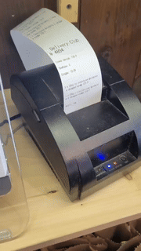
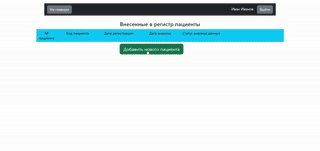
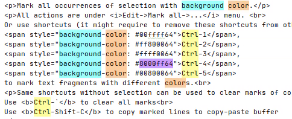

Печать чеков для кафе
 Проект для автоматизации печати чеков с заказами из различных сервисов доставки: Яндекс.Доставка, ЕК ДОСТАВКА, Delivery Club, собственный сайт кафе.
Основные задачи:
- Разобраться с управлением принтером при ограниченной документации.
- Исследовать API сервисов доставки без официальной документации.
- Унифицировать разнородные API в единую структуру.
Инструменты и технологии: DevTools, REST API, encodings, Python, escpos, wxPython, unittest
Регистр пациентов
 Веб-приложение для регистрации врачей-офтальмологов и ведения базы данных пациентов, проходящих хирургическое лечение.
Инструменты и технологии: Bootstrap, CSS, Python, FastAPI, Jinja
Библиотека c2dll
from c2dll import dllfunc, as_ptr
import numpy as np
def my_func(eps, n):
d = dllfunc('''
DLL_API void f(double* params, int n, double* out) {
for (int i=0; i<n; i++) {
out[i] = ... // some heavy calculations
}
}''')
n = int(n)
results = np.zeros(shape=(n))
d.f(as_ptr([eps,]), n, as_ptr(results))
return results
print(my_func(0.1, 1000))
Библиотека для упрощенной интеграции небольших фрагментов кода на C в проекты на Python.
Страница на PyPI
Статистика скачиваний
Репозиторий на GitHub
Инструменты и технологии: Python, ctypes, PyPI, MSVC Build Tools
Marker Plugin
Более 2000 скачиваний

Плагин для IntelliJ IDEA (и других IDE на её основе), позволяющий выделять текст разными цветами.
Страница на JetBrains Marketplace
Инструменты и технологии: Java, IntelliJ Platform Plugin SDK
Проверка настроек оборудования
В организации периодически возникала проблема: несколько десятков устройств самопроизвольно переключались на неверную радиочастоту. Был разработан скрипт, который регулярно проверяет их настройки и автоматически восстанавливает корректные параметры при необходимости.